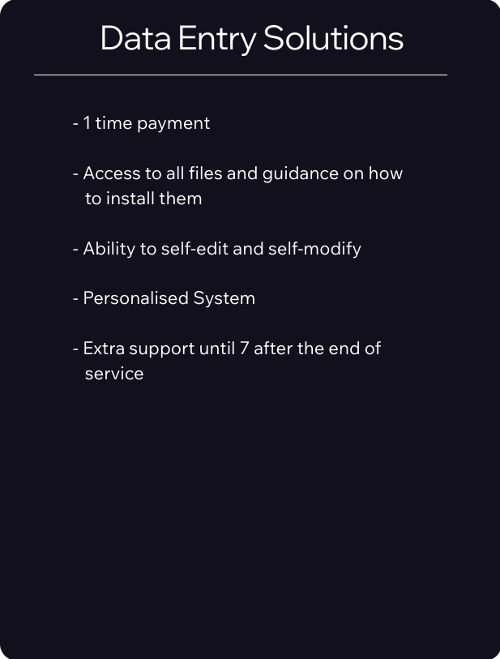
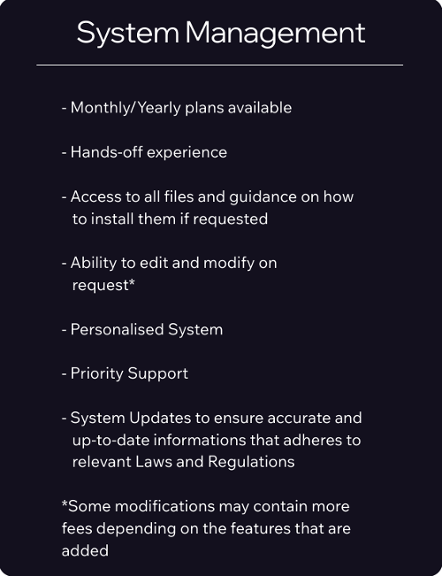

Here at AssetFlow Automation, we strive to create impactful automations that save time for our clients. We believe time is the most valuable asset, and every second saved from repetitive admin work is a second spent on making more money.
Our automations streamline documentation processes by using Artificial Intelligence to understand inputs provided by users. Our system then performs specific actions that we ask it to do. This in return gives us sets of information. We then move the information to other platforms before formatting it into the desired output.
AssetFlow Automations works hard to make systems that are user-friendly, not only for customers, but also for the people working at the companies we partner with. Our mission is to make everyone's lives easier, not harder.
Interactive Demos
Data Handling
Just answer some questions and our system will do the rest!
Client Profile
Give us a name and we'll give you a profile of the person on Google Docs!
Appointment Booking
Set appointments up with clients whenever you're free!
To Be Continued
We're thinking of another useful automation to offer if you have any ideas, let us know through our Agent on your right
Services


Note:
- Prices may vary from £500 to £5000 depending on the complexity of the system.
2 or more systems can also be intertwined with each other, but you must request this when describing your system.
- A pre-payment of £100 must be made before the service begins,
you will be made aware of this during the process and at the specific time that we require the pre-payment.
More information can be found when choosing your service. If you want to get in contact with the team,
you can find the contact details at the bottom of this page.
Blogs
Maximizing Asset Management Efficiency Through AI Automation
In today's fast-paced business world, optimizing asset management efficiency is crucial for staying competitive and thriving in the market.
Boost Productivity in Asset Management with AI Automation Programming
In asset management, efficiency and productivity are key. Leveraging technology to streamline processes is crucial, and AI Automation Programming is revolutionizing operations.
AI-Powered Document Management
Document management requires time and resources. With AI automation solutions, streamlining document management processes has become easier.
In today's fast-paced business world, optimizing asset management efficiency is crucial for staying competitive and thriving in the market. Asset management firms are constantly looking for innovative solutions to streamline their operations and increase productivity. This is where AI automation comes into play, revolutionizing the way assets are managed and enabling businesses to achieve better results in less time.
In today's fast-paced business world, optimizing asset management efficiency is crucial for staying competitive and thriving in the market. Asset management firms/companies are constantly looking for innovative solutions to streamline their operations and increase productivity. This is where AI automation comes into play, revolutionizing the way assets are managed and enabling businesses to achieve better results in less time.
AssetFlow Automations is at the forefront of this technological revolution, offering cutting-edge AI automation programming services to asset management firms/companies. With a strong focus on data entry and document management, AssetFlow Automations helps businesses leverage the power of artificial intelligence to enhance their overall efficiency and effectiveness.
So, how exactly does AI automation maximize asset management efficiency?
By implementing AI systems, asset management firms/companies can automate repetitive tasks such as data entry, sorting, and organizing documents. This not only helps save time and reduce human errors but also allows employees to focus on more high-value tasks that require human intelligence and creativity.
Furthermore, AI automation can analyze and interpret vast amounts of data at a speed and accuracy that surpasses human capabilities. This enables asset management firms/companies to make more informed decisions, identify trends, and opportunities, and ultimately, maximize their asset management efficiency.
At AssetFlow Automations, the goal is to empower businesses to work smarter, not harder. By providing secure services, transparent pricing, and exceptional customer support, AssetFlow Automations is dedicated to helping asset management firms/companies achieve their full potential and reach new heights of success.
In conclusion, AI automation is a game-changer for companies looking to enhance their efficiency and productivity. By harnessing the power of artificial intelligence, businesses can streamline their operations, make better-informed decisions, and ultimately, achieve greater success in the ever-evolving business landscape. With AssetFlow Automations leading the way, the future of documentation looks brighter than ever.
In the realm of business, efficiency and productivity are key factors that can make or break a business. In the sector of asset management, where time is of the essence and accuracy is paramount, leveraging technology to streamline processes has become imperative. This is where AI Automation Programming comes into play, revolutionizing the way asset management firms operate.
In today's fast-paced world, efficiency and productivity are key factors that can make or break a business. In the realm of asset management, where time is of the essence and accuracy is paramount, leveraging technology to streamline processes has become imperative. This is where AI Automation Programming comes into play, revolutionizing the way asset management firms operate.
AssetFlow Automations is at the forefront of this technological advancement, offering cutting-edge AI systems that are designed to boost productivity in asset management. Specializing in services such as Data Entry and Document Management, AssetFlow Automations is dedicated to helping companies optimize their operations and achieve greater efficiency. By harnessing the power of AI automation, asset management firms can significantly reduce the time and resources spent on manual data entry and document management tasks. This not only frees up valuable human resources to focus on more strategic activities but also minimizes the risk of errors that are inherent in manual processes.
One of the key advantages of AI automation programming is its ability to analyze large volumes of data at incredible speeds, enabling asset management firms to make informed decisions quickly and accurately. These AI systems can also adapt to changing market conditions and regulatory requirements, ensuring that firms remain agile and compliant in a dynamic environment.
Moreover, the security features offered by AI systems provide an added layer of protection for sensitive client data, giving asset management firms and their clients peace of mind knowing that their information is secure.
With an extensive expertise in automation programing, AssetFlow Automations is ready to help firms streamline their processes and optimize their operations. With a user-friendly website that offers detailed information on their AI systems and secure service purchases, AssetFlow Automations is quickly becoming a trusted partner for asset management firms looking to enhance productivity and stay ahead of the curve.
In conclusion, AI automation programming is a game-changer for asset management firms, offering a powerful tool to boost productivity, streamline operations, and improve decision-making processes. As technology continues to evolve, firms that embrace AI automation will undoubtedly gain a competitive edge in the market.
Document management can be a daunting task for many businesses, requiring extensive time and resources to handle paperwork, data entry, and organization efficiently. However, with the emergence of AI automation, solutions like those offered by AssetFlow Automation, streamlining document management processes have never been easier.
Document management can be a daunting task for many businesses, requiring extensive time and resources to handle paperwork, data entry, and organization efficiently. However, with the emergence of AI automation, solutions like those offered by AssetFlow Automation, streamlining document management processes have never been easier.
AssetFlow Automations specializes in AI automation programming, specifically catering to asset management firms and companies looking to boost productivity and efficiency through automated systems. With a keen focus on data entry and document management, AssetFlow Automations's services are designed to simplify and expedite the management of large volumes of information.
By harnessing the power of artificial intelligence, AssetFlow Automations can automate repetitive tasks such as data entry, document organization, and data processing. This not only reduces the risk of human error but also significantly speeds up the document management process, allowing businesses to focus on more critical tasks at hand.
One of the key selling points of AssetFlow Automations's services is the emphasis on security. In today's digital age, data security is of utmost importance, especially when handling sensitive information. AssetFlow Automation ensures that all data handled through their AI systems is encrypted and secure, giving clients peace of mind knowing that their information is protected.
Whether you are a small business looking to streamline your document management processes or a large asset management firm in need of efficient data entry solutions, AssetFlow Automations has the tools and expertise to meet your needs.
In conclusion, for businesses looking to enhance productivity, reduce costs, and improve data security, AssetFlow Automations's AI automation solutions are a game-changer. By leveraging the power of artificial intelligence, businesses can streamline their document management processes like never before. Say goodbye to tedious paperwork and hello to a more efficient and secure way of managing your documents with AssetFlow Automations.